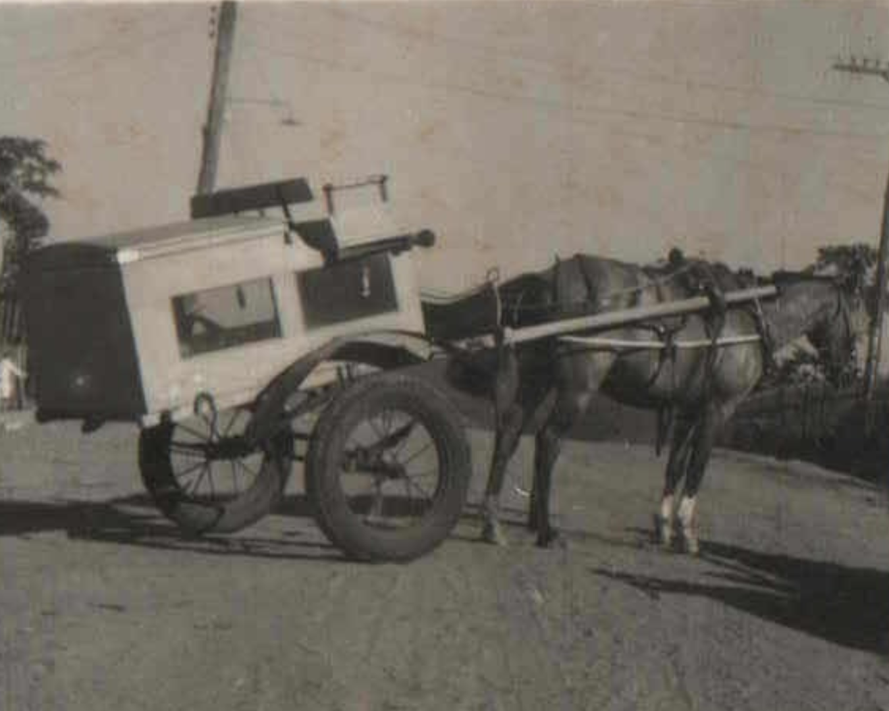
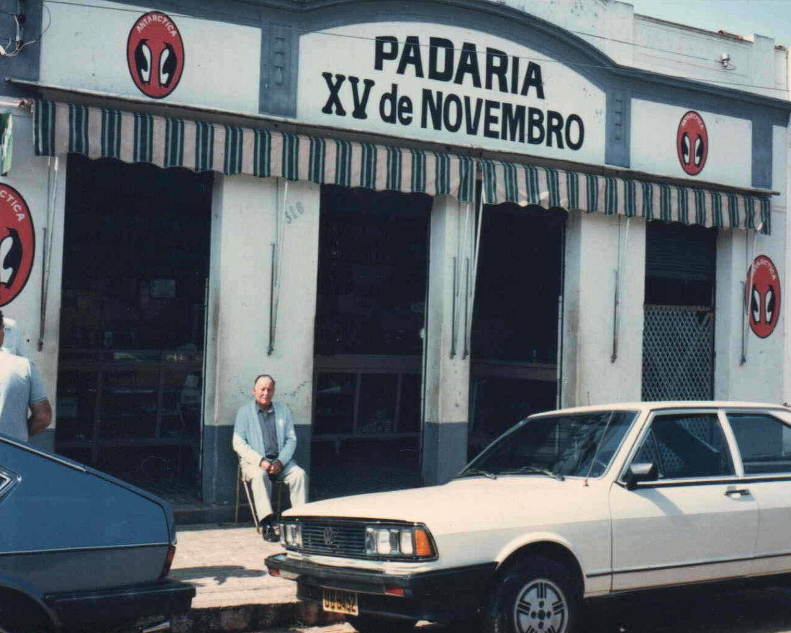

Padaria XV de Novembro
Há 82 anos, servindo sabor e tradição à sua mesa.

Há 82 anos, servindo sabor e tradição à sua mesa.
A Padaria XV de Novembro é parte viva da história de Gália - SP. Fundada em 1943 pela família Canassa, passou a ser comandada pela família Cardoso em 1957, que desde então vem mantendo acesa a tradição, o sabor e o amor pelo pão feito com dedicação. Atualmente em sua 3ª geração de proprietários, a padaria segue na mesma localização: Avenida São José, nº 316, e segue há mais de 80 anos levando sabor, tradição e afeto aos lares da cidade e região. a padaria preserva o que tem de mais especial: o modo artesanal de fazer pães, o forno à lenha sempre aceso e o carinho no atendimento ao cliente. Nosso compromisso vai além da panificação. É uma missão de manter viva uma memória afetiva coletiva, em que cada fornada traz consigo histórias e sabores que atravessam gerações. Nas primeiras décadas, as entregas eram feitas em *carroças fechadas, desenvolvidas exclusivamente para transportar os pães ainda quentes, diretamente para as casas dos moradores. Mais tarde, uma perua passou a ser usada no serviço de entregas — e hoje, mesmo com veículos modernos, *mantemos esse costume vivo: os pães continuam chegando de **madrugada, na porta dos clientes, com a mesma qualidade e carinho de antes. (As imagens ao lado mostram um pouco dessa linda trajetória.) Oferecemos uma variedade de pães, doces e salgados, sempre com ingredientes selecionados e aquele toque especial que só o forno à lenha pode proporcionar. Nossa estrutura é simples, mas acolhedora, com produção feita por uma equipe pequena e dedicada — formada pelos dois irmãos proprietários e mais dois funcionários — que fazem questão de manter o cuidado em cada detalhe. Mesmo com os desafios do presente, buscamos evoluir sem perder nossas raízes. Estamos implantando melhorias tecnológicas para facilitar a rotina dos clientes e planejar o futuro com responsabilidade, mantendo o equilíbrio entre inovação e tradição. A Padaria XV é mais do que uma padaria: é um pedacinho da cidade, um ponto de encontro entre passado e presente, onde o pão de cada dia vem com história, dedicação e afeto.  